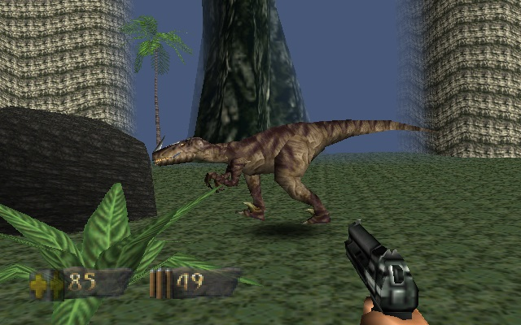
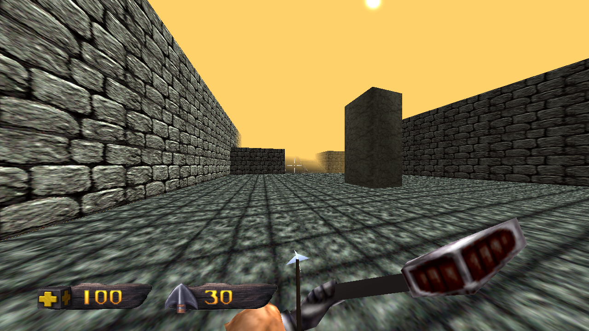
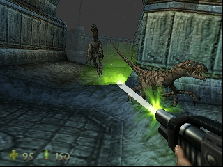
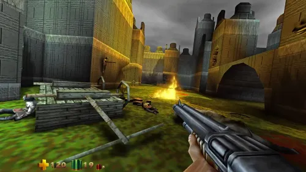
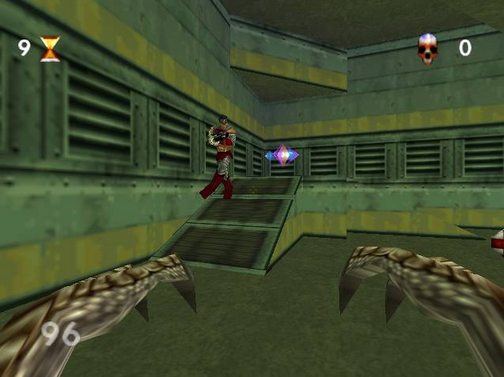
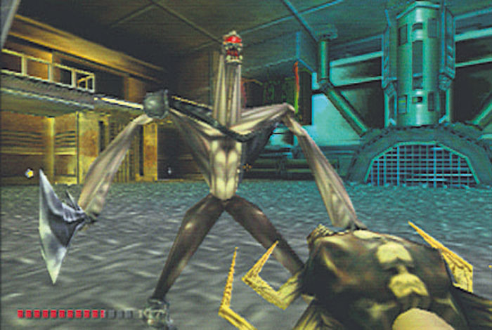
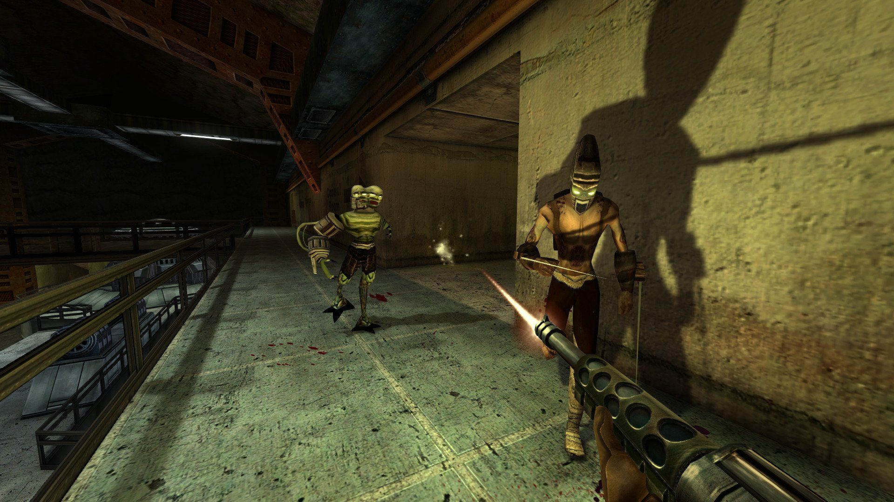

Turok Remastered
Die Turok Remastered Triologie wurde am 30. November 2023
mit Turok 3 Shadow of Oblivion Remastered beendet. Wie wir
alle wissen gibt es noch einen Teil, der von vielen als "DLC"
angesehen wird und wohl auch bei Nintendo solche Aussagen hervorgerufen hat.
Leider ist es für nicht ersichtlich warum man diesen Teil nicht als Vollwertigen
Titel ansieht denn auch dieser Teil der in der Remastered Reihe, meiner Meinung nach
fehlt, hat einen Singleplayer als auch eine Multiplayer.
Klar er besitzt vielleicht nur kleine Maps, hat aber trotzdem den Charm eines
vollwertigen Games. Es dreht sich um nichts weiter als um Turok - Die Legende des
verlorenen Landes oder besser bekannt als Turok - Rage Wars.
Ja viele Stunden vereinte damals die Familie und/ oder Freunde vor der N64 - Konsole und
wird auch heute noch von einigen sehr gern gespielt.
Nun ist es aber so das Nightdive Studios die ersten drei Teile Remastered hat und ich möchte
hier nochmals eine kleine Zusammenfassung bieten mit einigen Bildern Von der originalen Version
und der Remastered Version.
Fangen wir an:
Turok 1 oder besser bekannt als DINOSAUR Hunter:


Wie man sehen kann hat sich von 1997 zu 2015 sehr viel geändert.
Das schließt auch die Engine, mit der das Game geschrieben worden ist, ein.


Auch hier sieht man den Unterschied sehr deutlich zwischen 1998 und 2017.
Ich finde trotzdem alle 4 Teile Von Turok mega nice.
So und nun kommt der nächste Teil der momentan nur 1999
herausgekommen ist und der doch immer noch die damalige Würde und Charm besitzt:
HIER IST TUROK RAGE WARS:

Nun kommen wir zu dem Teil der fast 23 Jahre gebraucht hat und momentan
die längste Zeit in Anspruch nahm um ein Remaster zu werden.
Und trotz das es nur ein Game für die Konsole war ist es Nightdive
Studios gelungen, es für den Rechner zu remastern.
Ein ganz Großes Dankeschön an euch, dem Team von Nightdive Studios.
Leider muss man auch dazu sagen das es nicht jeder so gesehen hat und
sich auf unnötger Art und Weise darüber ausgelassen hat das es kein
Multiplayer besitzt. Nun ich muss sagen ich finde das Game richtig gut
und werde euch die Bilder nicht vorenthalten:


!!!ACHTUNG!!! Die Website wird immer weiter aktualisiert. Ideen bitte in Discord in den entsprechenden Channel schreiben. Vielen Dank